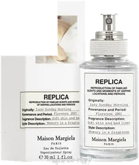
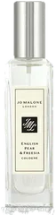
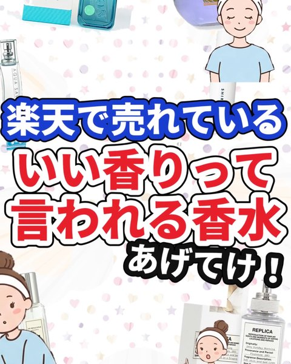
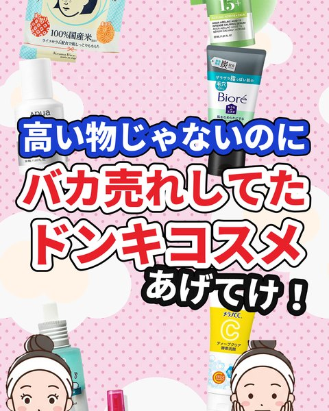
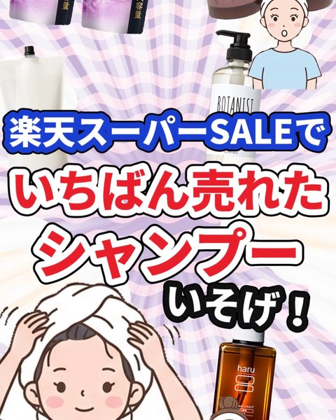

FROM THE LATEST EDITTHE EDITS
動画から、探す。

LATEST EDIT / 2026.09.12
いい香りって言われる香水
6品を紹介
紹介アイテムを見る →
COSME EDIT / 2026.09.11
ドンキで売れてたコスメ
8品を紹介
紹介アイテムを見る →
COSME EDIT / 2026.09.11
楽天スーパーSALEで売れたシャンプー
6品を紹介
紹介アイテムを見る →OUR POINT OF VIEW
良かった声も、
合わなかった声も。
売れているコスメを、公開クチコミから読み解く。
自分に合う一本を選ぶ、そのきっかけに。
コメントはクチコミの要約です。
まい本人の使用体験ではありません。